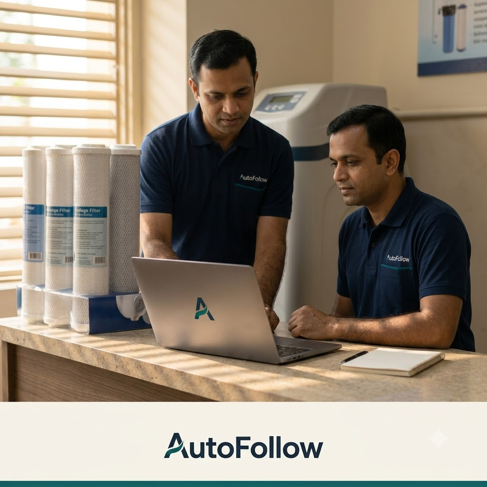
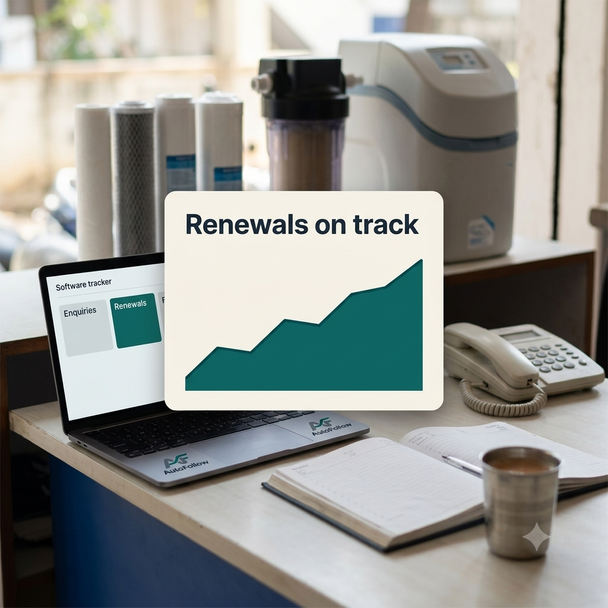
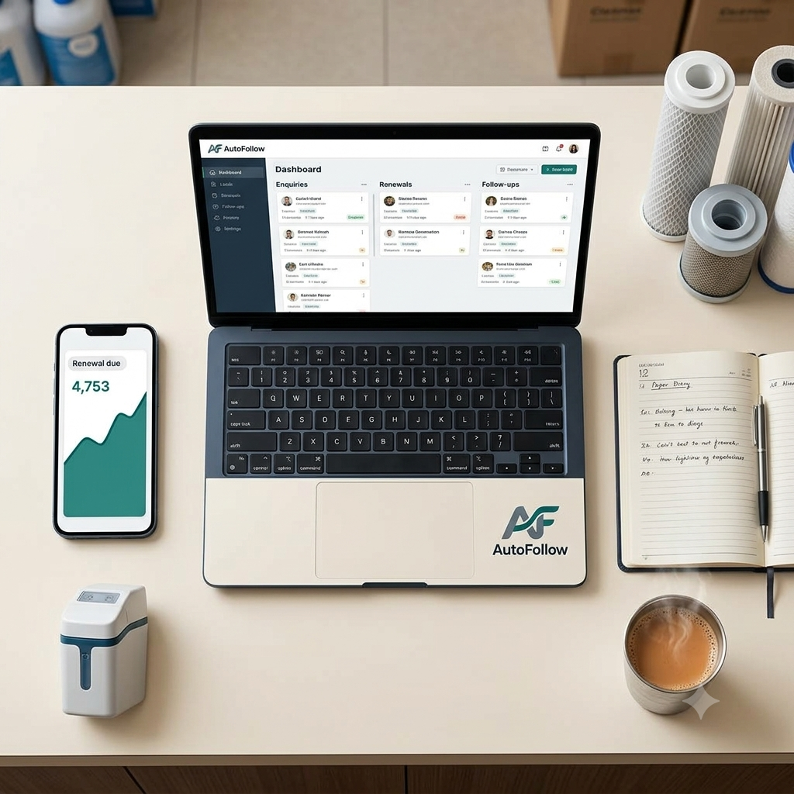
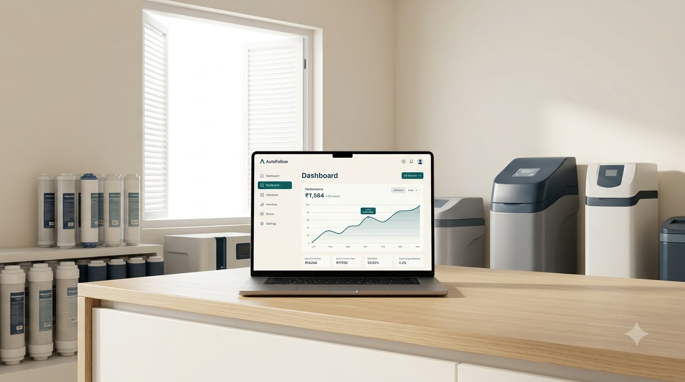

Site visit to follow-up record
Every site visit becomes a follow-up record with its own reminder.
A small follow-up and renewal tracker for water conditioner and softener dealers and service teams in Bengaluru, where the follow-ups run on their own.

The problem
Your enquiries, your site visits and your yearly service renewals all sit in one person's WhatsApp.
Quotes go cold within a week.
Renewals lapse without anyone noticing.
Installs that were nearly closed are quietly lost.

The services
Every site visit becomes a follow-up record with its own reminder.
Every enquiry and every yearly renewal sits on one board, so nothing waits on one person's memory.
A short weekly brief on water conditions in Bengaluru, so the dealer always has something useful to send.
AutoFollow keeps your leads, your AMC renewals, your service status and your payment follow-ups on one board, and they run on their own. Your customers can sign in and see their own details.
How it works
I set up the tracker around your enquiries and renewals.
The follow-ups run on their own and nudges go out on time.
I keep the tracker updated every month so nothing goes quiet.

About
I am Krishna, and I built AutoFollow for one reason.
I started it to follow up the leads, book the customer in for service, and follow up the payment.
AutoFollow is a small tracker. Every enquiry and every yearly renewal sits on one board, the follow-ups run on their own, and I keep the tracker updated every month. It is built for water conditioner and softener dealers and service teams in Bengaluru, serving homes and apartment communities.

Start
Pick a time that suits you, or reach me on WhatsApp or email. Whoever answers, it is me.
These open the app on your own phone. There is nothing to fill in on this page.